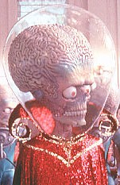

Contents | Features | Reviews | News | Archives | Store |
 |
|
| Movie Credits | Buy It! |
Mars Attacks!
Review by Carrie Gorringe
|  | Directed by Tim Burton. Starring Jack Nicholson, Glenn Close, Screen Story and Screenplay by Jonathan
Gems, |
Through serendipitous circumstances, Mars Attacks! is the satirical flip side of last summer’s Independence Day. Strange things are beginning to occur in America’s heartland, among them the discovery that while cows can’t fly, they most certainly can fry. It’s the old Bug-Eyed Monster problem again (though, by the looks of these hypercephalic aliens, apparent refugees from the 1955 film, This Island Earth, the proper designation for them might be Bug-Brained Monsters). Into this metaphysical morass steps President Dale (Nicholson), an obvious Clinton clone who is short on perception but long on procrastination. He is amply assisted in this vein by his scientific adviser, Donald Kessler (Brosnan) who equates the possession of advanced technology with a higher form of sensibility and a dislike for conflict; only humanity is capable of savage brutality. He must have been thinking of General Decker (Steiger), a combination of Dr. Strangelove’s Jack D. Ripper and Buck Turgidson. As with them and Communism, General Decker believes that the only good alien is a dead alien. Circumstances prove the General right, and the President ineffective. Soon, in good sci-fi fashion, everyone of importance is either vaporized or immobilized, and the task of saving the earth falls to some Joe Everyone named Richie Norris (Haas), whose Grandmother (Sidney) possesses, unbeknownst to her, the only effective weapon; as those who’ve suffered through bad commercials on late-night television will soon come to realize, the solution is just too wickedly good to give away on any level.
Based upon a set of 1960s trading cards of the same name, Mars Attacks! owes a considerable degree of debt to Kubrick’s master satire on xenophobia, Dr. Strangelove, not only in terms of characterization, but also in terms of sensibility. There are, however, several problems with this type of wholesale borrowing, foremost among them an appalling sense that Mars Attacks! suffers from a bad case of anachronism that is not only creeping, but terminal. It’s questionable whether or not the concept of sudden annihilation from above is topical enough to evoke the magical mixture of both laughter and fear generated by Strangelove (unless you believe in little green men who plan to abduct you for your DNA sample); Mars Attacks! might have stood a better chance if the aliens had landed in Russia and made off with several pounds of plutonium -- a much more likely and far scarier prospect in the contemporary world. Moreover, Kubrick’s satire was built, as is all effective satire, upon a strong base of character devolution; the audience watched as the paranoid Ripper and the pompous Turgidson, among others, were stripped of what little dignity they were permitted to hold, and rendered completely cretinous and scary. Unfortunately, Mars Attacks! doesn’t even allow for this development to occur; its characters start out as nasty clichés, and consequently their behavior (and the film) can’t get anywhere from there. This may also be a side-effect of the anachronistic plot; it’s difficult for modern audiences to believe in public officials possessing any sanctity, and that might be the most terrifying aspect of the film. All of the performances are excellent (standouts include Brosnan as the sanctimonious Kessler and Bening as a recovering alcoholic turned New-Age dipstick), but there’s a severe disconnectiveness between them and the film in which they appear; they’re hitting their marks, but the film isn’t. Nevertheless, all is not lost, because the audience still has Tom Jones available for a post-apocalyptic reprise of It’s Not Unusual. Tom Jones as the repository of Western culture: now, that’s really scary.
Contents | Features | Reviews | News | Archives | Store
Copyright © 1999 by Nitrate Productions, Inc. All Rights Reserved